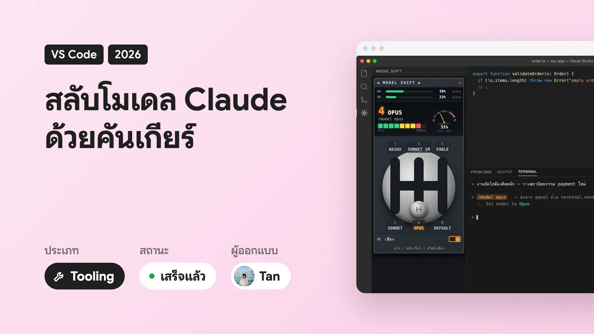
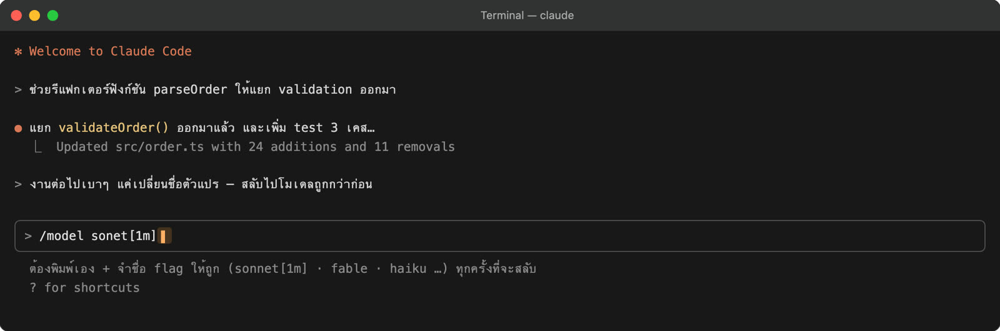
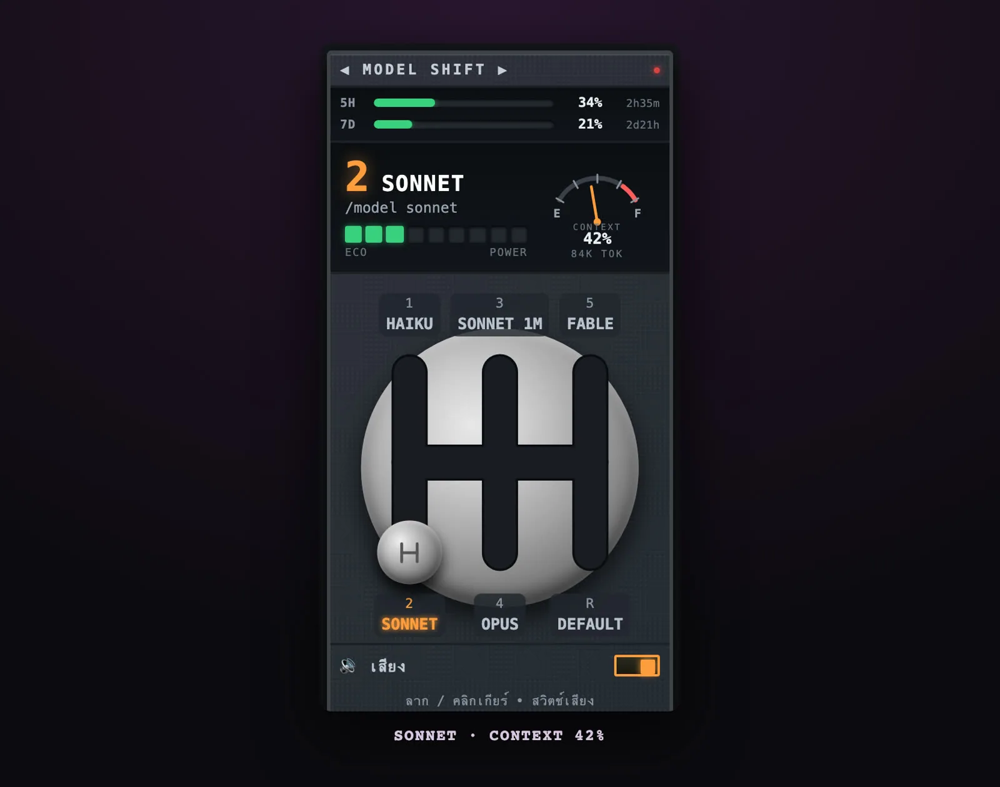
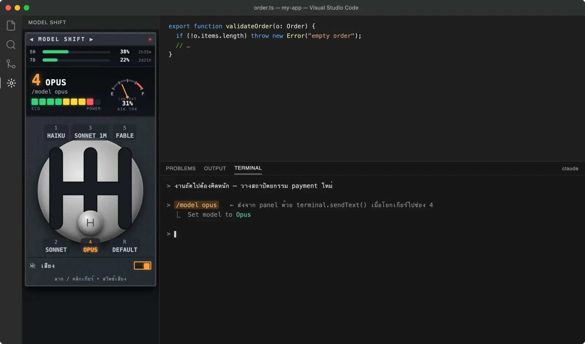
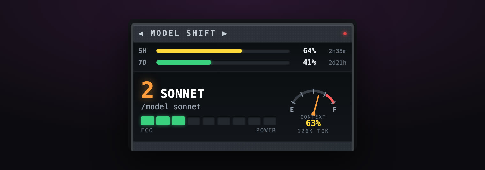
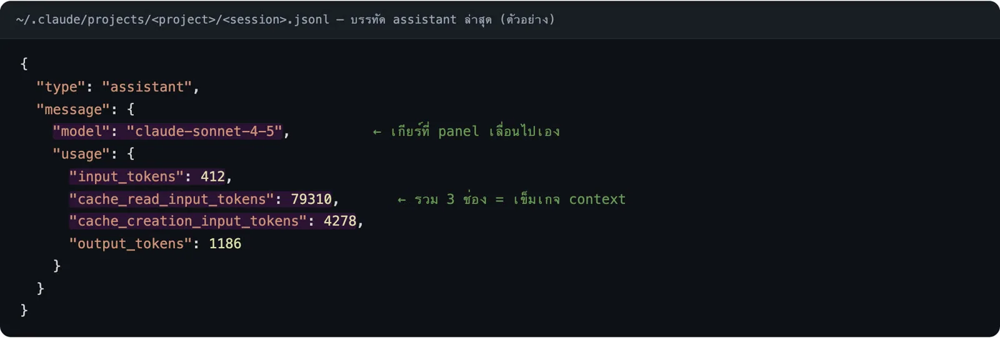

Model Shift
VS Code / Cursor extension ที่เปลี่ยนการพิมพ์ /model ให้เป็นการโยกคันเกียร์ — สลับโมเดล Claude Code ทันที, เห็นสถานะเป็นภาพ, ปิดเสียงแจ้งงานเสร็จได้ในสวิตช์เดียว สร้างด้วย Vanilla JS + Bun ไม่มี npm dependency ข้อมูลไม่ออกนอกเครื่อง

VS Code / Cursor extension ที่ยกงานพิมพ์ /model ออกมาเป็น panel แยกหน้าตาเหมือนคันเกียร์รถ (H-pattern) — โยกเกียร์เพื่อสลับโมเดลทันทีระหว่างคุยกับ Claude Code, sync สถานะจริงจาก transcript, พร้อมสวิตช์ปิด/เปิดเสียงแจ้ง task เสร็จจากจุดเดียว
ปัญหาที่เจอ
ทำไมการสลับโมเดลไปมาระหว่างทำงานกับ Claude Code ถึงกวนใจกว่าที่ควร?

/model + จำชื่อ flag เองกลางบทสนทนา (ภาพจำลองหน้าจอ terminal)Claude Code สลับโมเดลได้ด้วย /model <name> — แต่ต้องพิมพ์เอง + จำชื่อ flag (sonnet[1m], fable) ทุกครั้ง โมเดลก็เพิ่มขึ้นเรื่อยๆ (Haiku / Sonnet / Sonnet 1M / Opus / Fable) และเราสลับบ่อยเพื่อคุมงบ vs คุณภาพ vs ความเร็ว การพิมพ์คำสั่งกลางบทสนทนาเลยขัดจังหวะ แถมสถานะที่ว่า "ตอนนี้โมเดลไหนติดอยู่ / context เหลือเท่าไร" ก็เป็น text ล้วน ไม่เห็นเป็นภาพ
พิมพ์ /model ทุกครั้งช้า + ต้องจำ flag
ชื่อ flag ไม่ตรงกับชื่อที่เห็น (sonnet[1m], fable) แถมเปลี่ยนตามเวอร์ชัน Claude Code — จำผิดทีก็สลับพลาด ต้องพิมพ์ใหม่
โมเดลเยอะขึ้น เลยสลับบ่อย
Haiku / Sonnet / Sonnet 1M / Opus / Fable — งานเบาใช้ตัวถูก งานยากค่อยขยับขึ้น การสลับกลับไปมาเพื่อคุมงบต่อคุณภาพเลยเกิดหลายครั้งต่อ session
อยากสลับจากหน้าจอแยก ไม่แย่งพื้นที่พิมพ์
การพิมพ์คำสั่งกลาง prompt ทำให้เสียโฟลว์ — อยากมีปุ่มอยู่ "นอก" TUI ที่กดแล้วสลับได้เลยโดยไม่ต้องละมือจากบทสนทนา
ไม่เห็นสถานะเป็นภาพ
โมเดลไหนกำลังติดอยู่? context ใกล้เต็มหรือยัง? ทุกอย่างเป็นตัวหนังสือ — อยากได้ readout แบบหน้าปัดรถที่กวาดตาแล้วรู้ทันที
เสียงแจ้งงานเสร็จปิดยากตอนประชุม
ตั้งเสียงแจ้งเวลา task เสร็จไว้ให้รู้ตัว แต่พอเข้าประชุมต้องรีบปิด — ถ้าต้องไปไล่แก้ config หรือ restart claude ก็ไม่ทันการณ์
วิธีแก้ปัญหา
ยกงานพิมพ์คำสั่งออกมาเป็นคันเกียร์ — โยก 1 ที = สลับโมเดล + เห็นสถานะเป็นภาพเหมือนหน้าปัดรถ

คันเกียร์ H-pattern บน panel แยก
Panel ในแถบข้าง (activity bar) หน้าตาเหมือนคันเกียร์รถ 6 ตำแหน่ง — ลาก knob หรือคลิกป้ายเพื่อสลับโมเดลทันที ไม่ขัดจังหวะการพิมพ์ prompt
ยิง /model เข้า terminal ตรงๆ
Claude Code ไม่มี API ให้สลับจากภายนอก — ปุ่มเลยยิง terminal.sendText("/model opus") เข้า integrated terminal ที่ claude รันอยู่ (surface web ใช้ tmux send-keys)
สื่อสารสถานะเป็นภาพ
เกียร์ที่ติด + VU meter (ความแรงโมเดล) + เกจ context แบบหน้าปัดน้ำมัน E→F — กวาดตาแล้วรู้ทันทีว่าโมเดลไหนอยู่ และ context ใกล้เต็มหรือยัง
Sync โมเดลจริงจาก transcript
Poll ไฟล์ session *.jsonl อ่าน message.model จริง แล้วเลื่อนเกียร์ไปตำแหน่งนั้นแบบเงียบ — เผื่อผู้ใช้พิมพ์ /model เอง UI จะไม่หลุด sync
สวิตช์ mute เสียงจากจุดเดียว
กดสวิตช์ = touch/rm ไฟล์ flag .tts-muted ที่ TTS hooks เช็ค — เงียบ/ดังทั้งชุดทันที ไม่ต้อง restart claude ปิดทันประชุม
วิธีทำงาน — 4 จังหวะ
ตั้งแต่เปิด panel จนโมเดลสลับจริงในบทสนทนา

/model opus เข้า integrated terminal ที่ claude รันอยู่ (panel จริง · หน้าต่าง VS Code และ terminal เป็นภาพจำลอง)เปิด panel
คลิกไอคอนเกียร์ใน activity bar → panel คันเกียร์ H-pattern โผล่ในแถบข้าง
โยกเกียร์
ลาก knob / คลิกป้าย → sendText("/model opus") ยิงเข้า terminal + เสียง ka-chunk
Panel sync
Poll transcript ทุก 5 วิ อ่านโมเดลจริง + tokens → เลื่อนเกียร์ + ขยับเกจ context
กดสวิตช์เสียง
touch/rm .tts-muted → เสียงแจ้งงานเสร็จเงียบ/ดังทันที ไม่ต้อง restart
Tech Stack & Architecture
2 surface บนกลไกเดียวกัน — zero npm dependency, ไม่ยุ่งกับข้อมูลออกนอกเครื่อง

tmux send-keysVS Code Extension API = ปุ่มอยู่ "นอก" TUI ได้จริง แล้ว sendText ยิง /model เข้า integrated terminal โดยไม่ต้องพึ่ง API ที่ Claude Code ไม่มี · Bun.serve + tmux เป็น surface สำรองสำหรับคนใช้ terminal เปล่า — native, ไม่ต้อง express · Flag file (.tts-muted) ให้ mute ทั้งชุด hooks จากจุดเดียวโดยไม่ต้อง restart · Vanilla JS ล้วน + zero npm dependency — ดีไซเนอร์แก้ UI ใน 1 ไฟล์ได้ ไม่มี build step
สิ่งที่สร้าง — 8 ความสามารถหลัก
ครบตั้งแต่โยกเกียร์ ยิงคำสั่ง ไปจนเสียงแจ้งงานเสร็จ

H-Pattern Gear Shifter
คันเกียร์ 6 ตำแหน่ง (1–5 + R) ลาก knob แล้ว snap ไปเกียร์ที่ใกล้สุด หรือคลิกป้ายตรงๆ — feel เหมือนโยกเกียร์รถจริง
Model Switcher
ยิง sendText("/model <name>") เข้า integrated terminal (surface B ใช้ tmux send-keys) — สลับโมเดลโดยไม่ต้องพิมพ์เอง
Real-Model Sync
Poll *.jsonl ทุก 5 วิ อ่าน message.model จริง → เลื่อนเกียร์เงียบ ๆ ให้ตรงสถานะ กัน UI หลุด sync
Context Gauge
หน้าปัดน้ำมัน E→F คิดจาก input + cache_read + cache_creation ของ message ล่าสุด เทียบหน้าต่าง 200K
VU Meter
ช่องไฟบอกความ "แรง" ของโมเดลตามค่า rpm ที่ map ไว้ในแต่ละเกียร์ — สื่อสารว่ากำลังใช้ตัวเบาหรือตัวหนัก
Ka-chunk Sound
เสียงคลิกตอนเข้าเกียร์สร้างสดจาก Web Audio (clack()) — ไม่มีไฟล์เสียง เป็น feel ของคันเกียร์
เสียงแจ้งงานเสร็จ 17 บุคลิก
Stop hook สุ่ม 1 ใน 17 บุคลิกทุกครั้งที่ task เสร็จ (ผู้ประกาศข่าว / หุ่นยนต์ / บัตเลอร์ ฯลฯ) ผ่าน TTS + fallback say
Mute Switch
สวิตช์ใน panel touch/rm ไฟล์ .tts-muted ที่ hooks เช็ค — ปิด/เปิดเสียงทั้งชุดทันที ไม่ต้อง restart claude
หน้าตา Panel
คลิกไอคอนเกียร์ใน activity bar → เห็นเกียร์ที่ติด, เกจ context และสวิตช์เสียงในหน้าจอเดียว

Hack กับปัญหา
6 โจทย์ที่ต้องคิดทางแก้เอง — ข้อจำกัดของ tooling + การประกอบคำสั่งให้ปลอดภัย

Claude Code ไม่มี API ให้สลับโมเดลจากภายนอก
อยากมีปุ่มสลับโมเดล แต่ไม่มี endpoint / SDK ให้เรียก — จะสั่งจากหน้าจอแยกได้ยังไง
/model <name> + Enter เข้า terminal ที่ claude รันอยู่ — surface หลักใช้ activeTerminal.sendText() ของ VS Code (ไม่ต้อง tmux), surface สำรองใช้ tmux send-keys รับคนที่ใช้ terminal เปล่าชื่อโมเดลยิงเข้า shell/terminal เสี่ยง injection
ค่าที่เอาไปต่อเป็นคำสั่ง send-keys / sendText ถ้าไม่ตรวจก่อน อาจถูกยัดคำสั่งอื่นแฝงมา
^[\w\[\]-]+$ ก่อนส่งทุกครั้ง (ทั้ง 2 surface) — ผ่านเฉพาะ a–z 0–9 [ ] - + ฝั่ง web ใช้ Bun.$ interpolation ที่ escape ให้อัตโนมัติ ส่งเป็น arg เดียวUI เป็น one-way — ไม่รู้โมเดลจริง
สั่งโมเดลได้ แต่ถ้าผู้ใช้พิมพ์ /model เองในบทสนทนา เกียร์บน panel จะหลุด sync กับของจริง
*.jsonl ที่ mtime ใหม่สุดทุก 5 วิ อ่าน message.model → เลื่อนเกียร์เงียบ ๆ (ไม่ยิง /model ซ้ำ ไม่มีเสียง) + หลังสับเกียร์เองพัก sync 30 วิ กัน transcript ที่ยังไม่อัปเดตดึงเกียร์กลับคันเกียร์ต้องรู้สึกเหมือนของจริง
ถ้าเป็นแค่ปุ่มธรรมดา ก็ไม่ต่างจาก /model picker เดิม — ต้องมี "feel" ของการโยกเกียร์
(g.x-px)²+(g.y-py)²) + เสียง ka-chunk สร้างสดจาก Web Audio ตอนเข้าเกียร์ — visual layer ทับ logic เดิมโดยไม่แตะกลไกส่งคำสั่งเสียงต้องปิดได้เร็ว โดยไม่ restart
เสียงแจ้งงานเสร็จมาจาก hooks หลายตัวที่รันแยกกัน — จะปิดทั้งชุดตอนประชุมให้ทันได้ยังไง
tts-lib.sh ร่วมกัน แล้วใส่ guard [ -f ~/.claude/hooks/.tts-muted ] && return 0 ที่หัวฟังก์ชันพูด — สวิตช์แค่ touch/rm ไฟล์ flag = เงียบ/ดังทั้งชุดทันที ไม่ต้อง restart claudeTTS ยิง API ทุกครั้งแพงและช้า
ถ้า gen เสียงใหม่ทุกครั้งที่งานเสร็จ ก็เปลืองเงิน + ต้องต่อเน็ต + หน่วง แถมแต่ละบุคลิกดังไม่เท่ากัน
md5(voice+instructions+text) — มีไฟล์แล้ว afplay เลย (ยิง API 0 ครั้ง, $0), ไม่มีค่อย gen 1 ครั้งแล้วเซฟ + normalize ทุกเสียงด้วย ffmpeg loudnorm ไป -16 LUFS ให้ดังเท่ากัน (ไม่มี ffmpeg ก็ข้าม ไม่พัง)Design Decision ที่ตั้งใจเลือก
ขอบเขตที่จงใจ "ไม่ทำ" สำคัญพอๆ กับสิ่งที่ทำ

เครื่องมือนี้ทำหน้าที่เดียว: สลับโมเดลให้เร็วขึ้น + สื่อสารสถานะเป็นภาพ — มันไม่ได้แทนที่ /model picker ในตัว Claude Code (ขายที่ "เร็วกว่า + เห็นเป็นภาพ + ไม่ต้องจำ flag"), การ sync เป็นการ "อ่านอย่างเดียว" จาก transcript ไม่เขียนอะไรกลับ, และไม่มีข้อมูลออกนอกเครื่อง ขอบเขตชัดตั้งแต่ต้น = implement ตรงและ maintain ง่าย
ยิงคำสั่ง ไม่ replace picker
ขายที่เร็ว + เห็นเป็นภาพ ไม่ใช่อุดช่องว่างฟังก์ชัน
Sync อ่านอย่างเดียว
อ่าน transcript มาแสดง ไม่เขียนกลับ ไม่แตะ session
Mute = flag file จุดเดียว
คุมทั้งชุด hooks ด้วยไฟล์เดียว ไม่ต้อง restart
Zero npm dependency
Vanilla JS + Bun แก้ UI ใน 1 ไฟล์ ไม่มี build step
Knowledge Domain ที่แข็งขึ้น
5 พื้นที่ความรู้ที่ระดับเราขยับขึ้นจริงจากการทำโปรเจกต์นี้

message.model และ token usage ใน transcript *.jsonl (ค่าตัวอย่าง)เข้าใจ activity bar view container + webview provider, การสื่อสารระหว่าง extension host กับ webview, ใช้ vscode.window.activeTerminal.sendText() ยิงคำสั่งเข้า terminal, อ่าน/เขียนไฟล์ด้วย fs, และ package เป็น .vsix ลง Cursor ถาวร — จากศูนย์เป็น extension ที่ใช้งานจริงได้ทั้งตัว บทเรียน: webview คือ HTML/JS ธรรมดา แต่ต้องคิดเรื่องขอบเขตระหว่าง host↔view ให้ขาด
เรียนรู้ว่าเมื่อ tool ไม่มี API ให้ควบคุมจากภายนอก ก็ยังทำ integration ได้ด้วยการ "พิมพ์" คำสั่งเข้า terminal — sendText (VS Code) กับ tmux send-keys เป็นสอง pattern ของแนวคิดเดียวกัน บทเรียน: การ automate ไม่จำเป็นต้องรอ official API เสมอไป แต่ต้องยอมรับว่ามันเป็น one-way และออกแบบ sync เสริม
รู้โครงสร้าง session *.jsonl: message.model บอกโมเดลจริง, token usage แยก input / cache_read / cache_creation, และกลไก Stop hook ที่ยิงตอน task เสร็จ — เอามาทำทั้ง sync เกียร์และเกจ context บทเรียน: state ของ Claude Code อ่านได้จากไฟล์ ถ้ารู้ว่าอ่านตรงไหน
เขียน bash hooks ที่ source library ร่วมกัน, ต่อ OpenAI TTS (gpt-4o-mini-tts) พร้อม fallback offline (say), cache ด้วย md5 hash เพื่อไม่ยิง API ซ้ำ, และ normalize ระดับเสียงด้วย ffmpeg loudnorm → -16 LUFS บทเรียน: การ cache + fallback ทำให้ฟีเจอร์ที่พึ่ง API ภายนอกยัง degrade ได้อย่างสง่างามและถูกเงิน
ฝึก whitelist ด้วย regex ก่อนเอาค่าไปประกอบคำสั่ง shell/terminal + ใช้ Bun.$ ที่ escape ให้อัตโนมัติ แทนการต่อ string ตรงๆ บทเรียน: ทุกจุดที่ input ไหลเข้าไปเป็นคำสั่ง คือจุดที่ต้องคิดเรื่อง injection — กันได้ด้วย validate + escape ที่ถูก pattern